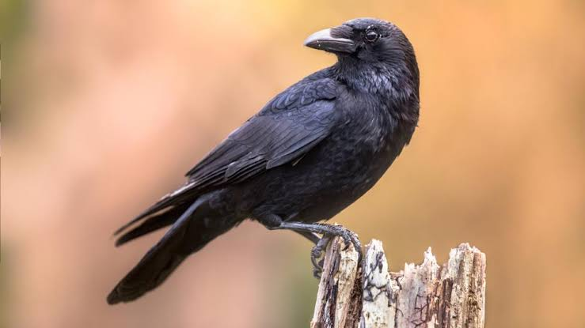

Crow
Birds
Corvus is a widely distributed genus of medium-sized to large birds in the family Corvidae. The genus includes species commonly known as crows, ravens and rooks; there is no consistent distinction
A large majority of the 40 or so Corvus species are known as crows, and the name has been applied to other, unrelated birds. Large crows measure about 0.5 metre (20 inches) long, with wingspans that can reach 1 metre (39 inches).
Crows feed chiefly on the ground, where they walk about purposefully. They are omnivores that enjoy meat and may even attack and kill young, weak animals. This habit makes them unpopular with farmers, as does the bird’s propensity to raid grain crops.
Berries, insects, the eggs of other birds, and carrion are also eaten.
Crows will make off with shreds of roadkill and store tidbits in trees, caching the meat like a leopard does for later consumption. Sometimes they bury seeds or store them in crevices in bark. They occasionally steal food from other animals, sometimes
cooperating with other crows to raid food from otters, vultures, and water birds.
Crows live in large, close-knit families, and, like social mammals, they not only hunt and forage together but also defend territories and care for the young together. Most species, however, do not nest in colonies.
Each mating pair has its own nest of sticks and twigs, usually high up in a tree. There are laid five or six greenish-to-olive eggs, with darker speckles. Young crows may spend up to six years with their parents before breeding on their own.
As winter approaches, northern crows gather into large night-roosting groups. These flocks can include tens of thousands of birds and occasionally hundreds of thousands. Possible reasons for this seasonal gregariousness are warmth, protection against predators such as owls, or information exchange. A crow may live 13 years in the wild and more than 20 years in captivity.
Scientific name: Corvus
Family: Corvidae
Class: Aves
Order: Passerine
Lifespan: Common raven: 10 – 15 years, Australian raven: 22 years, American crow: 7 – 8 years
Mass: Common raven: 0.69 – 2 kg, Australian raven: 650 g, American crow: 320 – 620 g
Some common crows are the American crow (C. brachyrhynchos) of North America and the carrion crow (C. corone) of Europe and most of Asia. A subspecies of the carrion crow with gray on the back of the neck and breast is called the hooded crow (C. corone cornix).
Sometimes considered a separate species, it is found between western Europe and eastern Asia and in the northern British Isles. Other crows include the house crow (C. splendens) of the Indian subcontinent (introduced in eastern Africa); the pied crow (C. albus),
with white nape and breast, of tropical Africa; and the fish crow (C. ossifragus) of southeastern and central North America. Other members of the genus Corvus not called crows are the raven, jackdaw, and rook.